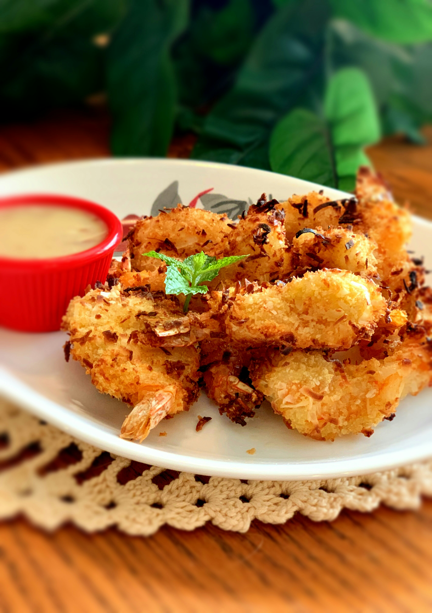

Air Fryer Coconut Shrimp
By: Samiisweets
January 18, 2022

Coconut Shrimp reference photo, taken by allrecipes.com
There is nothing like a nice crispy sweet coconut shrimp! This recipe is so easy, and they cook quickly in the air fryer and they come out
nice and crispy. I love having a good steak, and making these to go along side. I love keeping a bag of shrimp in the freezer so I can whip
these up on a whim.
Don't be shy to give these a try! Beginner cooks can create these fun appetizers, and really impress your company!
Lets Cook!
Ingredients
- 1/2 C - All-Purpose Flour
- 1 1/2 TSP - Ground Black Pepper
- 2 - Large Eggs
- 2/3 C - Unsweetened Flaked Coconut
- 1/3 C - Panko Breadcrumbs
- 12 OZ - Uncooked Medium Shrimp - Peeled and Deveined
- Cooking Spray
Steps
- Stir together flour and pepper in shallow dish.
- Lightly beat eggs in a second shallow dish
- Stir together coconut and panko in thir shallow dish
- Hold each shrimp by the tail, dredge in flour mixture, and shake off excess, then dip floured shrimp in egg, and allow excess to drip
off. Finally dredge in coconut mixture, pressing to adhere. Place coated shrimp on a plate, and coat with cooking spray.
- Preheat air fryer to 400 degrees F (200 degrees C). PLace 1/2 the shrimp in the air fryer for about 3 minutes. Turn shrimp over and
continue cooking until golden, about 3 minutes more. Repeate with remaining shrimp.
- Leave shrimp to cool for a few mins, and enjoy!